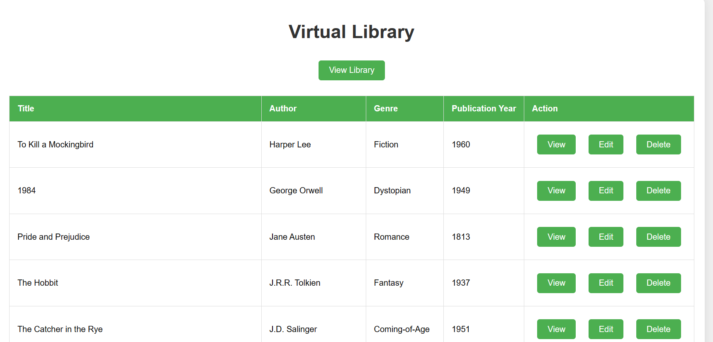

In our first lesson we learned about what is bad code and what is good code. And the conclusions I made are that use of proper semantics is very important in order to create easy to understand and easy to work on code. In order to practice this we had two tasks one was to research semantics and the other was to recreate the SSCE website using proper semantics.
Our second and more important task was the recreation of the ssce website. In my opinion I did a semi-decent job but after the first feedback I got some points of improvement such as removing the table that I used in order to creater the news section which I fixed for the 3rd weeks since I had more time. The other problem I faced was responsiveness which I couldn’t fix in time so I used @media. The final result you can check by clicking the button below.
During the creation of the website i faced a few challenges that were mainly created by the tight schedule. The first cahallenge and faced had to do with the first section of the project or more specifically the banner and the overlayed menu. This problem i fixed by setting the background of the section to the image and then putting the overlay with a bit of transparency. Second problem i had faced was the creation of the news section at first i did it with a table which i learned later for our second submission was a nightmare to make responsive so i decided to drop it all together and made it with articles inside of a section. Third problem which i didnt pay attention to was that i set the position of the navbar to sticky so its constantly on the screen.
conclusion:
Even though I can see I still have a lot to learn I think it has been a very useful experience and I can already see which semantic to use for each main element of my html projects.
Working withCSS animation
Css animations:
The next major task we had was animations. I had some experience with them before from semester 1 so I didn’t face quite a lot of problems when it came to the task given to us and that being creating a page that says “welcome to my portfolio” with the use of animations and the only problem I faced was the text remaining on screen which I fixed easily with the help of metaxas. The final re-sult you can see by clicking the button below.
For me the animations was the most fun task we had thus far and they are some-thing I would love to learn more about.
Recreating theRizon website
Info about the project
The final task before the first portfolio submission was recreating a website of our choosing from the awwwards website that wasn’t too hard but would also challenge me. The site I chose at the end was the Rizon truck website:
challenges
During its creation I faced quite a few problems some minor others more time consuming some created by overlooking some minor things and so on. The big-gest challenges I faced had to do with image formating and proper padding and responsiveness. This was due to me basically changing the backgrounds of the sections rather than working with image containers. Some other minor problems popped up after the feedback talk with metaxas such as overlooking semantics at some spots like using figure with caption for the images and the last problem was getting my gitlab working.
Solutions
When it comes to the image formating as I mentioned briefly above I got it working by using image containers and for the padding issues it was done by using trial and error which wasn’t ideal since it too way too much time and I could have found a quicker way. When it comes to setting up git I asked Wit for help and after 10 mins we got it all working. After getting the github working I fixed sematics of the code. The final site you can see by pressing the button be-low.
Even though this was the hardest project I have had thus far I think I did quite well givent the time limit and although I could’ve done a lot better with things like responsiveness and As mentioned previously I could’ve been a lot more ef-ficient and not waste as much time playing around with paddings. All that said I am very proud of what I have done thus far.
Portfolio Grades
Problems:
After the first submission I was very unsatisfied with the grades which made me think about what could be done better I asked feedback from metaxas on how I could achieve my goal of getting Beginning from the second submission and the feedback he gave me was: 1: Getting rig of the sections which I had in order to devide different outcomes into groups(Technical skills Professional skills Pro-fessional identity). 2: Going into way more detail of the process of creating the tasks and sites. He showed me thijs’ website as an example of a really well done job.
Solutions
When it comes to the outcomes I devided them into 6 outcomes and since I real-ly liked thijs’ design I started trying to make something like his but after running into a few problems such as overlapping of elements I used finaly thought of using containers and I asked him where he got the icons from and he provided me with a plugin that I could put in the head of my html in order to access them.
For the text this time I spent A LOT more time on in creating a docx with the starting ideas of it and after everything on it looked good I transferred it onto the page. For the page I also god the help of thijs for the images and how he makes them appear without overlapping with the text which is something I have always had some problems with.
conclusion:
Even though the first submission was a total failure in my eyes I am dedicated to making this one the best I can in order to achieve my goal.
Boiling Task
Info and process
The first Java script task we got was creating functions that calculate the conver-sion from Celsius to kelvin and to ferenheit and so on. We were in groups of two and I was in a group with Jan. By deviding the work into two(one is the re-searcher the other one codes) we were able to get this task done without any ma-jor problems. The homework we got though was a bit more complicated. We had to calculate what happens to the temperature of boiling water when we add different values of degrees to it. Although I didn’t face much problems with it since I had some previous experience with C# the biggest problem I had was doing the research and finding the right formula for this task. The task you can see in my gitlab repository.(Due to problems with gitlab again i will put the link to it when i fix it)
Run Marco was our second task. We had to create a play are that resembles a letter from the alphabet . I chose the letter “N”, but since I wasn’t in the class during the lecture I didn’t understand the task fully and ended up having some-thing that doesn’t quite fit what metaxas wanted from us but the changes that needed to be done aren’t anything special.(Due to problems with gitlab again i will put the link to it when i fix it)
The biggest challenge I had was navigating the code that was given to us by metaxas and finding where to draw the grip but we managed to figure it out quite fast with thijs jan and wit.
solving the Quadratic function
Info
For this task we were in groups of two again, I was with Andrew and we had to make a script that solves the quadratic function. The point of this task was to in-troduce us to if else loops and test cases.(Due to problems with gitlab again i will put the link to it when i fix it)
The main challenge was debugging since we got lost in the if statements and forgot one else case which took us 15 ish minutes to find and that was the main reason for getting wrong answers when c lower than 0.
Snake Game
Info
The last major and in my opinion the most interesting task we have had thus far was the snake game. During the lecture we were introduced to arrays which are the main things utilized in the code for the game. In order for me to count this task as complete I need to add quite a few things( 1: apples that make the snake grow. 2:score 3:obstacles such as bombs/rocks which when hit end the game 4:graphics. 5:host it on my website.)
Thus far I am in the early stages of the game and I haven’t faced any major is-sues the only bigger problem I faced was having the apples spawn outside the game area but it was easily fixable. The problems I am expecting in the future are the addition of graphics since this is something I have never done before and the hosting of the game on my website. I expect the hosting to be the biggest problem in not only one way ( making the site run way slower than intended in-turn making the game run slower as well).
Challenges and solutions (submission):
Although I still haven’t managed to host it on the website due to not having enough time I faced a few problems such as accidently deleting the file we made in class and having to start over which was a blessing in disguise since I learned a few things such as using the canvas command in order to create the playing which saved me a lot of time when it comes to creating it with css. Another real-ly helpful thing I learned is giving the variables in my js code ctx styles which again saved a lot of time for editing the snake and apples. The biggest problem thought is still time I wanted to implement bombs by this submission but couldn’t make it in time due to some debugging mistakes such as the bombs spawning outside of the grid or spawning on top of the apples.
For this task we had to create a to do list utilizing JSON files and Local storages. The main features were to add and remove a task and have a feature which swithces the status of the task between complete and incomplete.
i faced some minor issues such as getting the already stored activities from the local storage and removing an activity due which was fixed with the implementation of indexes to each added activity. But the biggest challenge i had to deal with was the function that deal with filtering, the first problem with it was that it didnt read the status of the task properly this was fixed with the usage of status to change on click and than get saved in the local storage this was achieved with the help of Stack overflow.. And then from there was quite simple.
We had the option to create either a number guessing game or a word game, and I opted for the number guessing challenge. I chose this task because I had previously worked on something similar during my time in software development. The goal of the game is pretty straightforward: a random number is selected at the beginning, and the user's objective is to guess it with as few attempts as they can.
To create the program, the first step was to make it randomly pick a number between 1 and 100. I used the Math.random method for this. Next, I added safeguards to get user input, making sure they don't enter numbers outside the range of 1 to 100 or any characters other than numbers. Then, I included a counter to keep track of the number of guesses made, using a const that increases with each guess. To make the game a bit easier, I added a function that checks the guess and informs the user whether it's higher or lower than the secret number they're trying to find. Lastly, I initially wanted to include a tip system with fun facts about the chosen number, but it turned out to be challenging. In the end, I modified it to tell the player whether the number is odd or even.
Digital Library
Info

For this task we had to create a digital library or also known as crud library. Our program had to have a few features:
Creating this JavaScript program turned out to be the most challenging task thus far. The whole process started by using a local storage system to save and store all the books that users would add. The second part involved crafting a menu for editing book information. This step felt more manageable, thanks to the skills I gained while working on the status filter system for my To-Do list. The next task was removing a book, which turned out to be relatively straightforward. However, displaying the book data posed some challenges. One issue was that the book details stayed on the screen even after deletion. I addressed this by adding an extra line of code, ensuring the details hide after a book is removed. The most significant challenge emerged when dealing with the API server. We used a mock API that we couldn't edit, and we discovered too late that we needed permission to do so. This led to a two-hour struggle, attempting to fix an issue beyond our control. Eventually, my colleague and I found a workaround by fetching the data from the API, storing it locally, and making edits from there. Despite being the toughest project, it has become my favorite. I take pride in what I've accomplished, proving to myself that I can overcome challenges and create something meaningful.